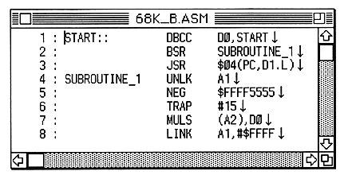
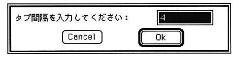

Return to previous page ｜ Return to menu ｜ Go to next page
-
Line feed character
- Displays ↓ where there is a newline character.

-
Tab / Full-width blank display
Displays <> where the - tab code exists, and ↑ where there is a full-width space.
-
Auto indent
- When a line break occurs, the indentation of the line is the same as the previous line.
-
Tab spacing ...
Sets the number of characters to jump when - TAB is entered.
The default value is 4 (4 characters for half-width spaces).

-
Create backup
Create a backup file when - file is opened.
Return to previous page ｜ Return to menu ｜ Go to next page